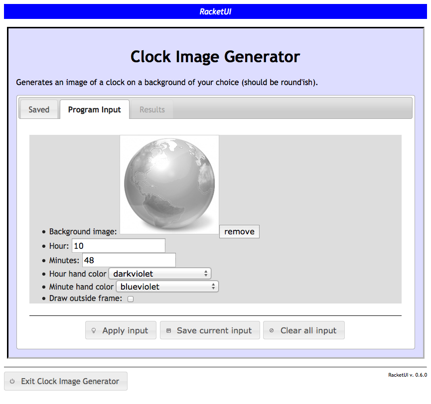
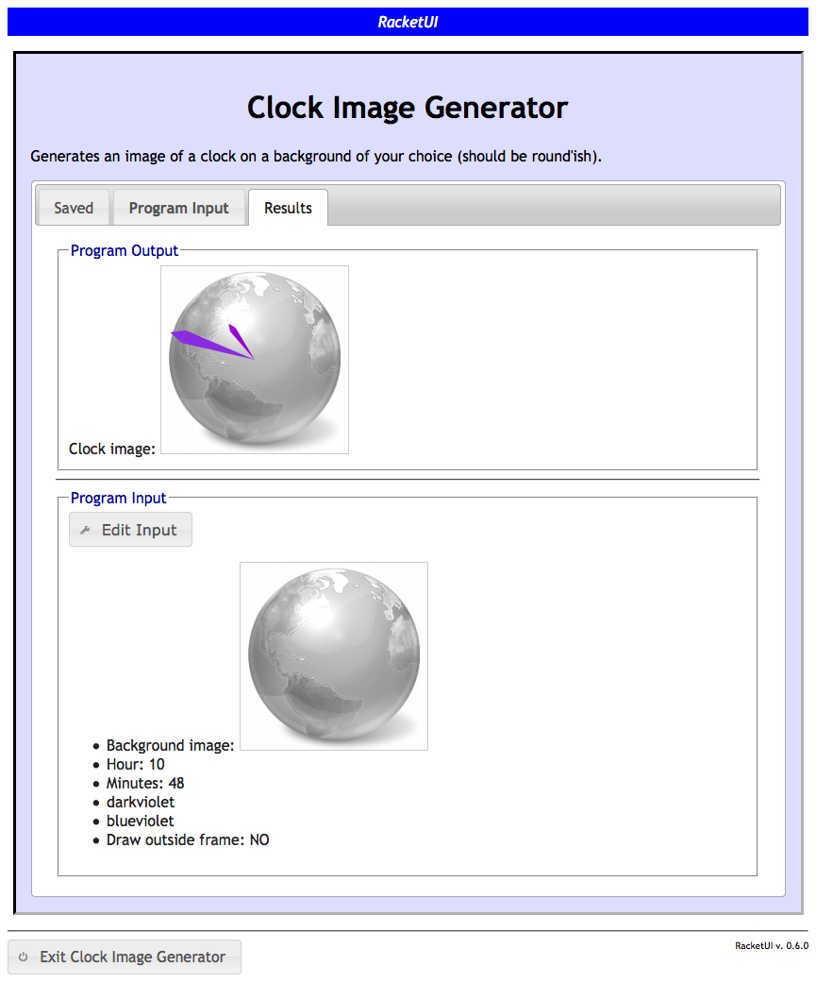

4 Examples
The acronym example above requires the user to enter a list of at least one word (listof+), where each word is not empty (string+). The resulting output is a string, possibly empty. Here are a few additional examples demonstrating use of the web spec forms.
4.1 A Union of Structures
Consider the following data definition:
; A File is either: ; - a Text-File (make-text-file String Number) ; - an Image-File (make-image-file String Number Number), or ; - a Sound-File (make-sound-file String Number) (define-struct text-file (name lines)) (define-struct image-file (name width height color?)) (define-struct sound-file (name duration))
And suppose one has defined the following function:
; file-size : File -> Number ; produces the size of the given file in bytes (define (file-size a-file) ...)
One can now proceed to define the corresponding web specs for the data definitions:
(define/web text-file/web (structure make-text-file ["File name" string+] ["Number of lines" number])) (define/web image-file/web (structure make-image-file ["File name" string+] ["Width (pixels)" number] ["Height (pixels)" number] ["Full-color" boolean])) (define/web sound-file/web (structure make-sound-file ["File name" string+] ["Duration of play (secs)" number])) (define/web media/web (oneof ["Text file" text-file/web] ["Image file" image-file/web] ["Sound file" sound-file/web]))
And the following form launches the web interface:
(web-launch "File Size Computer" (function "Computes the size of a web media file in bytes" (file-size ["Media file info" media/web] -> ["Computed size in bytes" number])))
4.2 List of Grades
Consider the following data definition for student exam grades:
; A Grade is either: ; - a Number ; - a String ; - a Re-take (make-retake Number Number), or ; - empty (define-struct retake (fst snd))
A grade entry is either a simple numeric value recording the grade or a string giving a reason for excusal for that particular exam (in which case the grade is not calculated in an average). If the student missed the exam, indicate that using empty (counts as a 0). If the student attempted the exam twice, that is represented using a retake structure.
Of course, one must write an average function (left as an exercise for the reader):
; average: List-of-Grades -> Number ; Produces the average of the given list of grades ; ignoring excusals, counting missing grades as 0, ; and taking into account the higher of two grades in ; case of a retake. ; If there are no values at all to average, produces ; the string "No Data". (define (average a-log) ...)
A web spec corresponding to the data definition above would be:
(define/web grade/web (oneof ["Actual grade" number] ["Excused (reason)" string+] ["Retake" (structure make-retake ["First attempt" number] ["Second attempt" number])] ["Missing" (constant empty)]))
And the web interface would be launched using:
(web-launch "Grade Average Computer" (function "Computes the average of grades in the given list." (average ["Grades" (listof ["Grade Result" grade/web])] -> ["Final Grade" (oneof ["Average grade" number] ["No Data" (constant "No Data")])])))
4.3 Input/Output Files
The filename web spec is intended to be used for functions that utilize the HtDP/2e Batch Input/Output teachpack to read and/or write (text) files.
Suppose one has written the following function:
; encryptFile : String String Number Boolean -> String ; Opens the file with given name, encrypts every line ; in the file using a caesar cipher with the given key ; (converting to uppercase if upcase?) and writes the ; encrypted lines to an output file with given name. ; Produces the name of the output file upon completion. (define (encryptFile in-file-name out-file-name secret-key upcase?) ...)
The corresponding web spec should use the filename specification for strings that correspond to the names of files whose content will be read as inputs, or written as outputs. The generated web interface will provide elements to upload input files and view (or download) output files.
(web-launch "!Encryptor!" (function "Use this program to encrypt your most secret files." (encryptFile ["Input file" filename] ["Output file name" string+] ["Secret key" number] ["Uppercase?" boolean] -> ["Encrypted file" filename])))
Note that the specification for the output file name is string+ not filename, because it really is only the name of output file (not content) that is taken as input, unlike the input file whose content will be read. The result produced by the function is the name of an output file to which content has been written; using filename, the generated web interface will provide the user a link to download and view the file upon completion.
4.4 Images
The image web spec provides UI elements allowing the user to specify an image (currently by given a URL) that will be loaded and provided as a bitmap to the function, or returned from a function as a bitmap.
The following could be a web spec for a function that generates an image with clock hands on a given background image.
(web-launch "Clock Image Generator" (function "Generates an image of a clock on a background of your choice (should be round'ish)." (time-clock ["Background image" image] ["Hour" number] ["Minutes" number] ["Hour hand color" color/web] ["Minute hand color" color/web] ["Draw outside frame" boolean] -> ["Clock image" image])))
Here is a representative screenshot of the input tab for a function that expects an image input:

and the result after applying the function:
